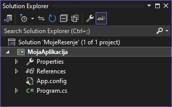
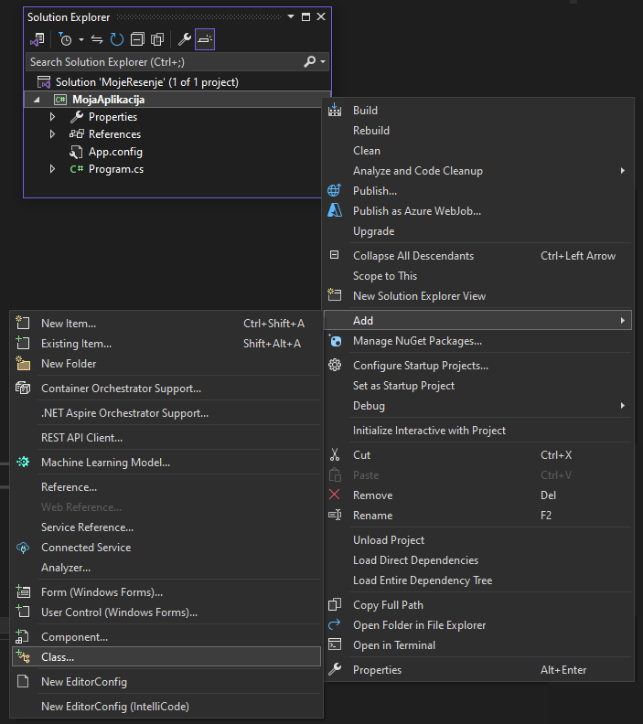
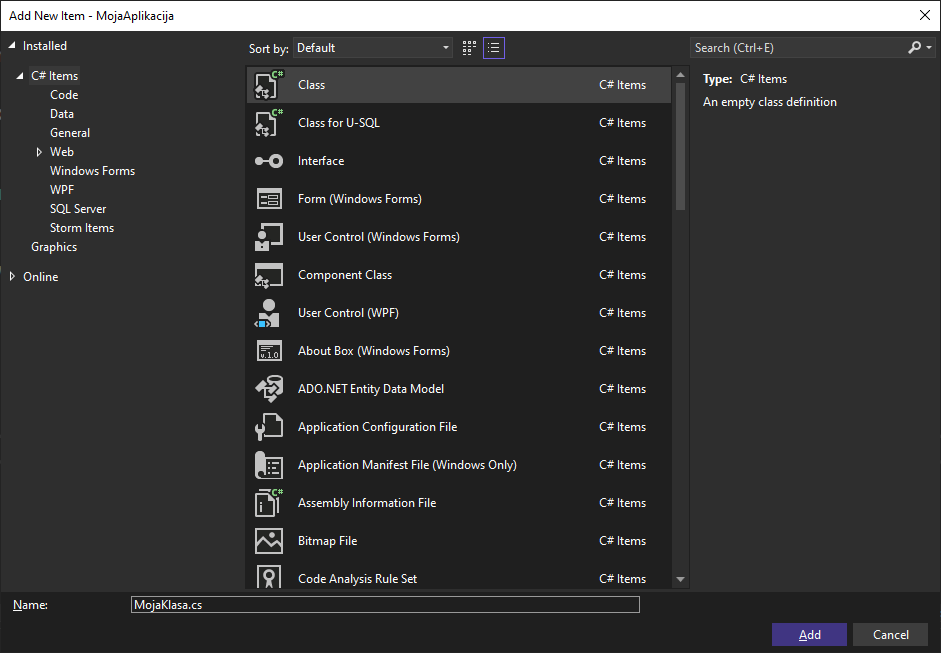
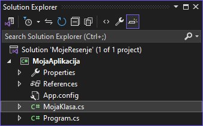

Додавање нове класе у пројекат¶
На почетку је речено да је класа Program место где се поставља почетна логика
програма и да је за веће апликације препоручљиво је да се логика распореди у
више класа, а да класа Program садржи само кôд за иницијализацију и покретање
апликације. Додатне класе можеш дефинисати у истом .cs фајлу у којем се
налази и класа Program, али ако је број и садржај тих класа велик, фајл ће
постати јако непрегледан. Решење је да додатне класе у оквиру истог пројекта
дефинишеш у засебним фајловима. Ова пракса је кључна за одржавање чистог,
организованог и скалабилног кода.
Када су класе у засебним фајловима, сваки фајл има јасну и одређену сврху. Ово олакшава читање и разумевање кода, како за тебе, тако и за друге који раде на истом пројекту. Раздвајање класа у више фајлова омогућава бржу навигацију кроз пројекат. Можеш лакше пронаћи и модификовати одређену класу без потребе да се крећеш (скролујеш) кроз велики фајл који садржи више класа. Пројекат који је организован са класама у засебним фајловима изгледа уредније и професионалније. Именски простори и структуре директоријума могу се користити за додатну организацију, што чини пројекат јаснијим и структуриран.
Када су класе у засебним фајловима, лакше је поново користити те класе у другим пројектима. Можеш брзо идентификовати класе које су опште намене које можеш искористити у различитим контекстима. У системима за контролу верзија (као што је Git), промене у засебним фајловима су јасније и лакше за праћење. Ако се све класе налазе у истом фајлу, конфликтне промене су чешће и теже за решавање.
Додавање нове класе у пројекат је једноставно и интуитивно. У Solution Explorer прозору…

…кликни десним кликом на назив пројекта (у овом примеру MojaAplikacija),
па одабери Add па Class:

Именуј фајл, односно класу, на пример MojaKlasa.cs…

…па кликни Add. Овим поступком си додао класу MojaKlasa у свој пројекат
у засебном фајлу:
